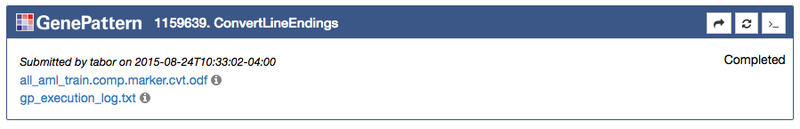
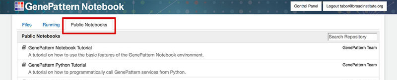

GenePattern Notebook Environment Features
The GenePattern Notebook Environment provides a variety of features for both basic and advanced users. The most commonly used features are detailed below.
Basic Features
These features are the most commonly used features in the GenePattern Notebook environment. They also form the building blocks for most advanced use cases.
GenePattern Cells
The GenePattern Notebook environment provides a number of graphical widgets that make performing analyses easy, even for non-programming users. These widgets take the form of GenePattern Cells that allow a user to prepare analyses, launch jobs and visualize results.
To insert a GenePattern Cell, insert a new cell, either through the Insert > Insert Cell Below menu or by clicking the button in the notebook toolbar. Once a new cell has been inserted, you can select the cell and then change the cell type to GenePattern either by using the Cell > Cell Type > GenePattern menu or by going to the dropdown menu in the notebook toolbar and selecting GenePattern from the list of options.
Authentication Cells
The first GenePattern cell that a user is likely to encounter is an Authentication Cell. This cell allows a user to sign into a GenePattern server. Doing this allows GenePattern to keep a user's results private, and to remember a user's settings.
Authentication cells will look like a login form with the additional option of selecting which GenePattern server to sign into. If the user has already authenticated, such as when usng the GenePattern Notebook Repository, the user will instead be prompted to either sign in as the current user or to cancel and sign in as a different user

Analysis Cells
After a user has signed in using an Authentication Cell, the next task is usually to insert an Analysis Cell to perform an analysis. To do this click the Tools button in the notebook toolbar. This wll open a dialog box with a list of available GenePattern analyses. Search or browse through the list and then click one of the options to insert an Analysis Cell of that type.
Every Analysis Cell has a number of parameters, which can be used to upload data and to select other options for the analysis. Once you fill in these parameters, click Run to submit them as a job on the GenePattern server.
Once the Run button has been clicked, all selected files will upload and then a Job Cell will be inserted below to indicate the status of the job in GenePattern’s queue (see Job Cells below).

Job Cells
The third and final kind of GenePattern cell are Job Cells. These cells represent an analysis job that has been submitted to GenePattern queue for processing. Jobs progress through the states of Pending, Running and finally either to Completed or Error.
Once a job has completed or experienced an error, the cell will update to display a list of outputs. These outputs are files which can be displayed in the browser, downloaded or sent as input to another GenePattern analysis. Outputs are indicated by the icon.
To see a list of all output file options, simply click that output in the list and a menu wll open, displaying the available options.
If this analysis includes visualization, the visualization will load and appear inside the Job Cell as well.

Markdown Cells
Markdown cells are another cell type available in the GenePattern Notebook environment. They allow a notebook author to take notes, document methods or embed images in a notebook document.
To insert a markdown cell, first insert a new cell, either through the Insert > Insert Cell Below menu or by clicking the button in the notebook toolbar. Once a new cell has been inserted, you can select the cell and then change the cell type to Markdown either by using the Cell > Cell Type > Markdown menu or by going to the dropdown menu in the notebook toolbar and selecting Markdown from the list of options.
Markdown cells allow the user to format text using either HTML or the Markdown syntax. Additionally, we provide a "What You See is What You Get" rich text editor (see the feature below).
Rich Text Editor
The GenePattern Rich Text Editor allows a user to format notes and documentation in a notebook in much the same way that one might use Microsoft Word or Libre Office — without the need to write a single HTML tag or line of markdown.
To use the Rich Text Editor, first insert a markdown cell (see the instructions above). Once a cell has been changed to the markdown type, two buttons should appear to the left of the cell. The button opens the Rich Text Editor and the button finalizes the cell and renders the text.
Click the button and the editor will appear. A toolbar will show above the cell, allowing the user to format text, insert headers or add links. Style the text as desired, and when finished, click the button to finish editing.

Publishing & Sharing Features
When using the GenePattern Notebook Repository, users have the ability to publicly share their notebooks and to run notebooks shared by others.
Browsing Public Notebooks
- To view the available notebooks, click the "Public Notebooks" tab and browse through the list.
- To obtain a copy and run the shared notebook, click the notebook in the list and then select "Get a Copy" on the confirmation dialog that pops up. This will make a copy of the chosen notebook in your current directory, accessible by clicking on the Files tab.
- To run the notebook, click the "Click here if you would like to open this notebook" link in the resulting dialog, or go back to the "Files" tab and run the notebook as normal from there.

Publicly Sharing Notebooks
- To publicly share a notebook, click the checkbox next to that notebook and then click the "Publish" button on the toolbar above.
- This will open a dialog with a short form, prompting you to enter the author's name, the quality and a brief description. Fill out this information and then click the "Publish" button on the dialog.
- Your notebook should now be available to the public and should appear on the "Public Notebooks" tab. The published version of the notebook is checkpoint of the notebook at the time it was published. Any changes you make to the notebook in the future are not copied over to the published version unless you explicitly choose to update the notebook in the public repository.
Updating or Removing a Public Notebook
- You can update or remove a notebook that you have made public by first clicking the checkbox next to the notebook and then clicking the "Publish" button.
- In the dialog that comes up you will have the option to edit any of the notebook's metadata, such as author name, description, etc.
- To update or remove the notebook, click the "Update" or "Unpublish" buttons, respectively.
Programmatic Features
In addition to the basic and publishing features intended for use by both non-programming and programming users alike, the GenePattern Notebook environment also provides a variety of features intended primarily for use by coders.
Code Cells
Code cells allow a user to type in execute Python code. They are the default type of cell. Simply enter the Python code you want to run and then click the (run cell) button in the notebook toolbar.
More information on code cells and their variousoptions is available in the Jupyter documentation.
GenePattern Python Library
A library is available for using Python to interact with available GenePattern's service. This allows a user to programmatically prepare analyses, launch jobs and retrieve results.
A complete tutorial on using the GenePattern Python Library is available as a public notebook in the GenePattern Notebook Repository. Additional information is available in our documentation.
Python Call Widget
The Call Widget is a way to display any Python function or method call as an interactive widget. This will render the parameters of the function as a web form.
The Call Widget will use any existing docstring for the function as a description, will infer parameter types from default values and will display parameter annotations as helpful text near each input.
To use render a function, simply import the GPCallWidget class from the genepattern package and pass the function to its constructor.

Send to Code
The GenePattern Python Library seamlessly integrates with GenePattern cells. Code examples of how to reference GenePattern jobs or GenePattern result files are available in GenePattern Job Cells by clicking a job result and selecting “Send to Code” in the menu.

Send to Dataframe
The GenePattern Python Library also provides functionality for common GenePattern file formats, allowing them seamlessly integrate with Pandas, a popular Python data analysis library.
Both the GCT and ODF file formats are easily loaded as Pandas Dataframes. Code examples of how to load these files are available in GenePattern Job Cells by clicking a GCT or ODF job result and selecting “Send to Dataframe” in the menu.
Python Variable Input
As part of the seamless integration between Python and GenePattern, Python variables may be directly used as input in GenePattern Analysis Cells. To use a Python variable as input, first define the variable in a code cell, then in a GenePattern Analysis cell, enter the variable name surrounded by two sets of curly brackets. For example, using the variable foo would appear as {{ foo }}
When the Run button is clicked to launch the analysis job, the notebook will first obtain the value of the variable used as input and then send that to the GenePattern server. As the GenePattern services expect a string, non-string variables will be cast as strings when they are evaluated.